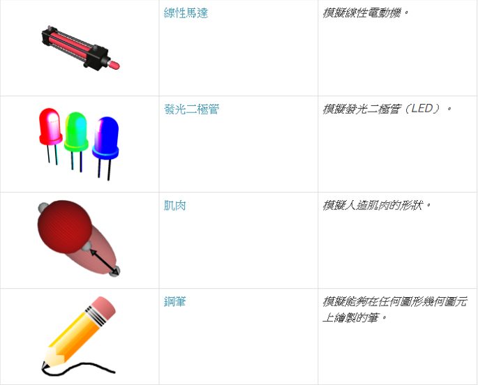

W3心得 <<
Previous Next >> W5心得
w5
翻譯webots部分內容

線性馬達
衍生自Motor。
LinearMotor {
SFString name "linear motor" # any string
SFFloat maxForce 10 # [0, inf)
SFString sound "sounds/linear_motor.wav" # any string
描述
甲直線電機節點可以用來驅動一個SliderJoint和一個軌道。
領域摘要
- 該name字段指定電機設備的名稱標識符。該wb_robot_get_device函數所引用的名稱。默認為"linear motor"。
- 該maxForce字段同時指定了電動機可用力的上限和默認值。該可力是可用於執行所請求的動作電動機的動力。它以牛頓[N] 表示。該wb_motor_set_available_force功能可用於在運行時更改可用力。的值maxForce應始終為零或正（默認值為10 N）。較小的maxForce值可能導致電動機由於其重量或其他外力而無法移動到目標位置。
發光二極管
源自設備和實體。
LED { MFColor color [ 1 0 0 ] # any color SFBool gradual FALSE # {TRUE, FALSE}}
描述
所述LED節點用於發光二極管（LED）進行建模。LED產生的光可用於調試或提供信息。結果顏色僅應用於LED節點的第一個子節點。如果第一個子對像是“ 形狀”節點，則emissiveColor其“ 材料”或“ PBRAppearance”節點的字段會更改。如果第一個孩子是Light節點，則其color字段會更改。否則，如果第一個孩子是“ 組”節點，則對該節點執行遞歸搜索，以查找必須修改的顏色字段，因此每個“ 光”，“ 形狀”和“ 組”節點根據以前的規則進行了更改。就Light節點而言，LED節點只能接受PointLight和SpotLight節點作為子節點。
請注意，將由LED功能自動更改的Material和Light節點不能是USE節點。
領域摘要
- color：這定義了LED設備的顏色。熄滅時，LED始終為黑色。但是，當打開時，它可能具有LED編程接口指定的不同顏色。默認情況下，該color定義僅定義一種顏色（紅色），但是您可以更改此顏色並添加可以從LED編程界面中選擇的其他顏色。但是，定義的顏色數量取決於gradual字段的值（請參見下文）。
- gradual：這定義了LED的類型。如果設置為FALSE，則LED可以採用color列表中定義的任何顏色值。如果設置為TRUE，則color列表應該為空或僅包含一種顏色值。如果color列表為空，則該LED為RGB LED，並且可以採用R8G8B8顏色空間中的任何顏色（1600萬種可能性）。如果color列表包含單一顏色，則LED為單色，並且其強度可以在0（關閉）和255（最大強度）之間進行調整。
LED功能
wb_led_set
wb_led_get
CC ++蟒蛇爪哇的MATLABROS
#include <webots/led.h> void wb_led_set(WbDeviceTag tag, int value);int wb_led_get(WbDeviceTag tag);
描述
打開或關閉LED並讀取其狀態
該wb_led_set功能可打開或關閉LED，可能會改變其顏色。如果value參數為0，則LED熄滅。否則，將其打開。
對於非漸變LED（gradual字段設置為FALSE），如果value參數為1，則使用color相應LED節點的字段中指定的第一種顏色打開LED。如果value參數為2，則使用color在LED節點的字段中指定的第二種顏色打開LED，依此類推。該value參數不應大於color相應LED節點的字段的大小。
對於單色LED（gradual字段設置為TRUE並且color字段僅包含一種顏色），該value參數指示LED的強度在0（關閉）到255（最大強度）的範圍內。
對於RGB LED（gradual字段設置為TRUE並且color字段包含空列表），該value參數指示LED的RGB顏色，範圍為0（關閉或黑色）至0xffffff（白色）。格式為R8G8B8：最高8位（左側）指示紅色電平（介於0x00和0xff之間）。位8至15指示綠色電平，而最低有效8位（右側）指示藍色電平。例如，0xff0000是紅色，0x00ff00是綠色，0x0000ff是藍色，0xffff00是黃色，依此類推。
該wb_led_get函數返回作為最後一個wb_led_set函數調用的參數給出的值。
肌肉
Muscle { SFDouble volume 0.01 # [0, inf) SFVec3f startOffset 0 0 0 # any vector SFVec3f endOffset 0 0 0 # any vector MFColor color [ ] # any color SFBool castShadows TRUE # {TRUE, FALSE} SFBool visible TRUE # {TRUE, FALSE}}
描述
甲肌肉節點可用於以圖形方式顯示的人工肌肉的收縮實現使關節和電機節點。使用球體表示人造肌肉，其中對稱軸是關節最近的上變換節點和endPoint 實體節點之間的向量。其他兩個軸具有基於對稱軸長度計算的相同長度，以便在拉伸過程中體積保持恆定。
請注意，如果Track節點中包含Motor設備，則無法使用Muscle節點。
領域摘要
- 該volume字段指定圖形橢球體的恆定體積。當關節移動時，該值用於重新計算肌肉的形狀。
- 的startOffset肌肉的底部點的位置的最近的坐標系中指定球狀體上變換節點。如果startOffset是[0, 0, 0]，則橢球底點對應於最接近的上變換原點。
- 所述endOffset指定肌肉的頂點的位置的坐標系中球狀體聯合。endPoint實體節點。如果endOffset是[0, 0, 0]，則橢球體的最高點對應於endPoint Solid原點。
- 該color字段指定三種不同肌肉狀態下球體的顏色：空閒（項目0），收縮（項目1）和放鬆（項目2）。顯示的顏色是通過將閒置顏色和當前狀態顏色與百分比（取決於電動機施加的力）混合而成的：
o color = idle_color * (1 - percentage) + other_color * percentage
在哪裡other_color收縮或放鬆色彩。僅使用三種顏色，因此，如果指定了更多項目，則將忽略它們。如果僅定義了兩種顏色，則當肌肉收縮或鬆弛時，將使用相同的顏色（項目1）。如果僅定義一種顏色，則將指定的顏色用於所有肌肉狀態。如果color字段為空，則所有肌肉狀態均使用默認顏色（純紅色）。
- 該castShadows字段使用戶可以打開（TRUE）或關閉（FALSE）由肌肉球體網格投射的陰影。
- 該visible字段用於顯示（TRUE）或隱藏（FALSE）3D場景中的肌肉。
鋼筆
源自設備和實體。
Pen { SFColor inkColor 0 0 0 # any color SFFloat inkDensity 0.5 # [0, 1] SFFloat leadSize 0.002 # [0, inf) SFFloat maxDistance 0.0 # [0, inf) SFBool write TRUE # {TRUE, FALSE}}
指數
描述
Pen節點對連接到移動機器人的筆進行建模，該筆通常用於顯示機器人的軌跡。Pen設備的繪製方向與節點的-y-軸重合。因此，可以通過修改實體節點的旋轉和平移字段來對其進行調整。通過設置該maxDistance字段，可以定義筆的範圍並僅在靠近設備的物體上繪畫。例如，使用較小的值maxDistance可以模擬僅在物理接觸時書寫的筆或鉛筆的真實行為。如果maxDistance設置為0（默認值），則範圍將不受限制。
為了可繪製，對象應該由一個實體節點組成，該實體節點包含一個帶有有效值的ShapeGeometry和一個ImageTexture。將已塗漆的圖層應用到紋理上，而無需對其進行修改。
繪製動作的精度主要取決於節點的subdivision場Geometry。較高的subdivision值會增加用於表示幾何圖形的多邊形的數量，因此可以進行更精確的紋理映射，但是也會降低場景的渲染速度。另一方面，如果紋理貼圖較差，則塗漆區域可能會顯示在與預期位置不同的位置。對於IndexedFaceSet，可以通過定義紋理映射並設置texCoord和texCoordIndex字段來提高精度。實際上，如果沒有給出紋理映射或給出無效的紋理映射，則係統將使用默認的常規映射。
“ pen.wbt”示例環境（位於Webots的“ projects / samples / devices / worlds”目錄中）提供了與配備筆的機器人一起使用的帶紋理的地板的示例。
注意：WorldInfo節點的inkEvaporation字段控制墨水蒸發的速度（消失）。
注意：可以通過紅外距離傳感器看到用鋼筆繪製的圖形。因此，可以實現機器人實驗，其中機器人用筆在地板上畫線，第二機器人用第一機器人畫的線進行跟隨行為。
領域摘要
- inkColor：定義筆墨水的顏色。可以使用此wb_pen_set_ink_color功能從pen API更改此字段。
- inkDensity：定義墨水顏色的密度。該值應在[0,1]範圍內。也可以使用wb_pen_set_ink_color函數從pen API更改此字段。
- leadSize：定義筆的“筆尖”的寬度。這允許機器人編寫更寬或更窄的軌道。
- maxDistance：定義Pen設備與可繪畫對象之間的最大距離，並允許模擬接觸式書寫行為。小於或等於0的值表示無限的繪畫範圍。
- write：此佈爾值字段允許機器人啟用或禁用用筆書寫。也可以使用wb_pen_write功能從pen API進行切換。
筆功能
wb_pen_write
CC ++蟒蛇爪哇的MATLABROS
#include <webots/pen.h> void wb_pen_write(WbDeviceTag tag, bool write);
描述
啟用或禁用筆書寫
該wb_pen_write功能允許用戶打開或關閉筆設備以禁用或啟用書寫。如果該write參數為true，則指定的tag設備將寫入；否則為0。如果write為false，則不會。
wb_pen_set_ink_color
CC ++蟒蛇爪哇的MATLABROS
#include <webots/pen.h> void wb_pen_set_ink_color(WbDeviceTag tag, int color, double density);
描述
改變筆墨水的顏色
該wb_pen_set_ink_color功能更改指定tag設備的當前墨水顏色。的color是32位整數值，其限定在為0xRRGGBB十六進制格式（即油墨的新的顏色，0x000000處為黑色，0xFF0000為紅色，0x00FF00為綠色，0x0000FF是藍色的，0xFFA500是橙色，0x808080是灰色0XFFFFFF是白色的，等等。）。該density參數定義墨水密度，0表示透明墨水，1表示完全不透明的墨水。
例
wb_pen_set_ink_color(pen,0xF01010,0.9);
上面的陳述會將指示筆的墨水顏色更改為某种红色。
注意 [MATLAB]：在wb_pen_set_ink_color函數的MATLAB版本中，color參數必須是包含三個RGB分量的向量[RED GREEN BLUE]。每個組件的值必須在0.0到1.0之間。例如，矢量[1 0 1]代表洋紅色。
W3心得 <<
Previous Next >> W5心得